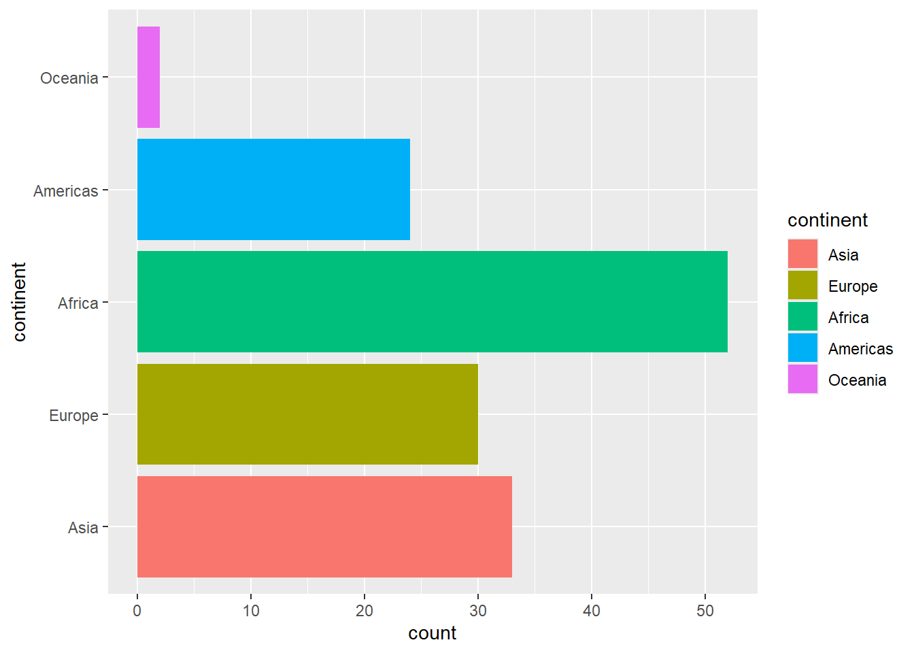
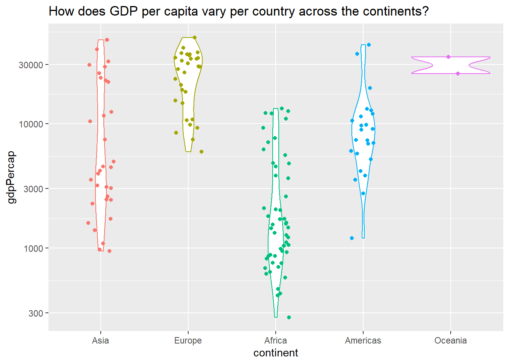
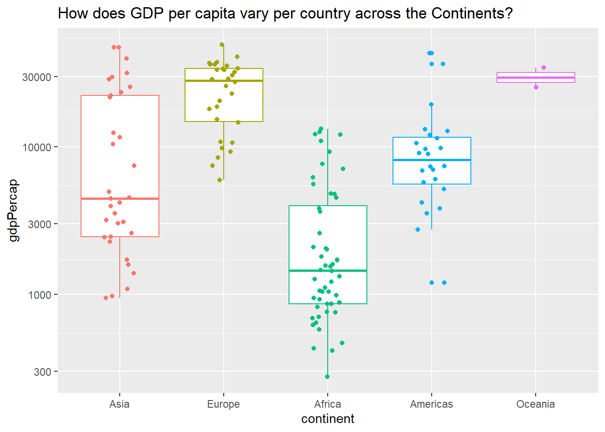
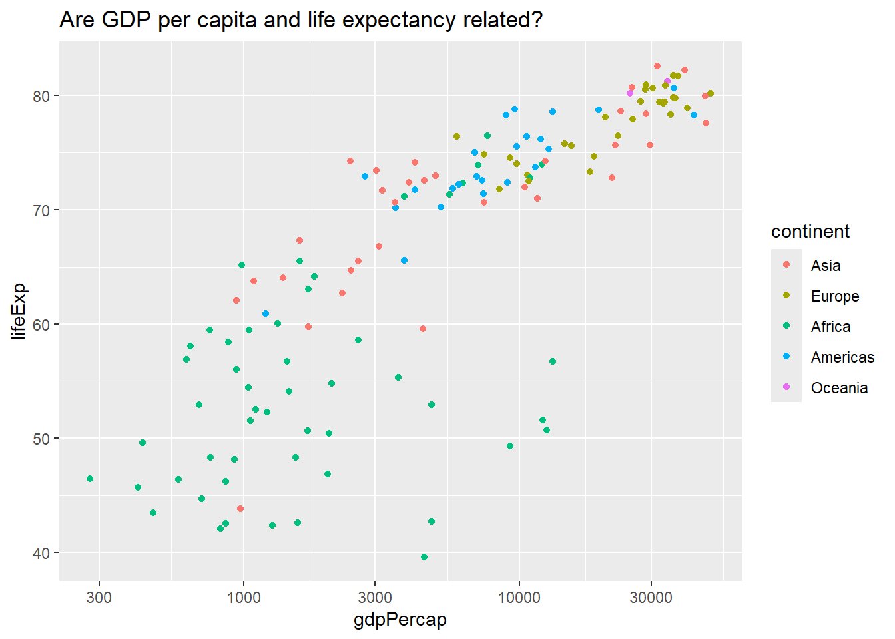
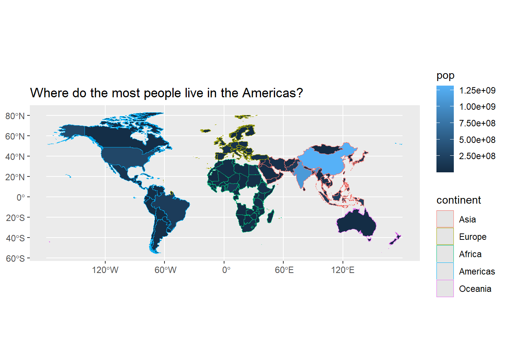
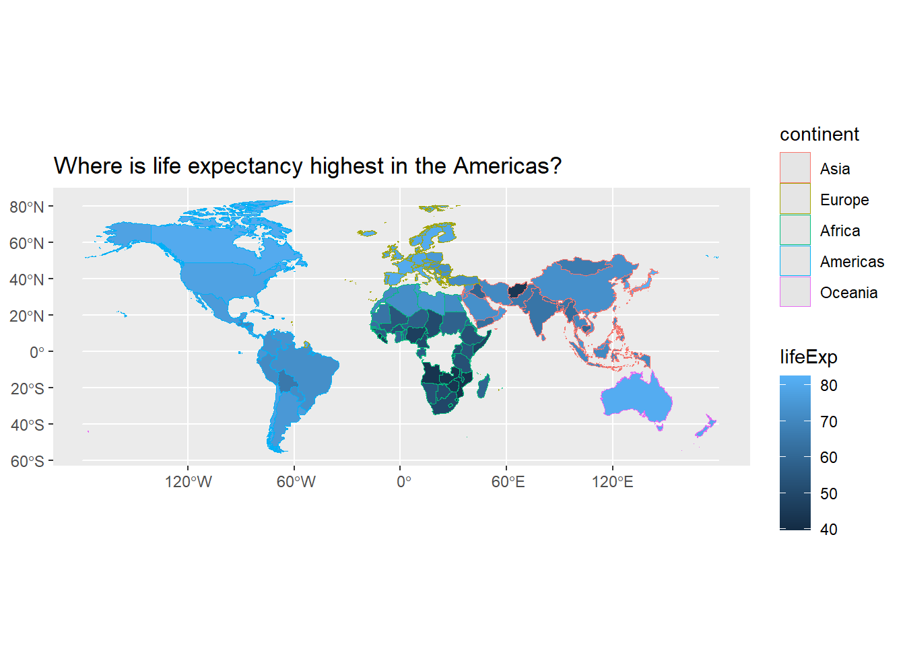
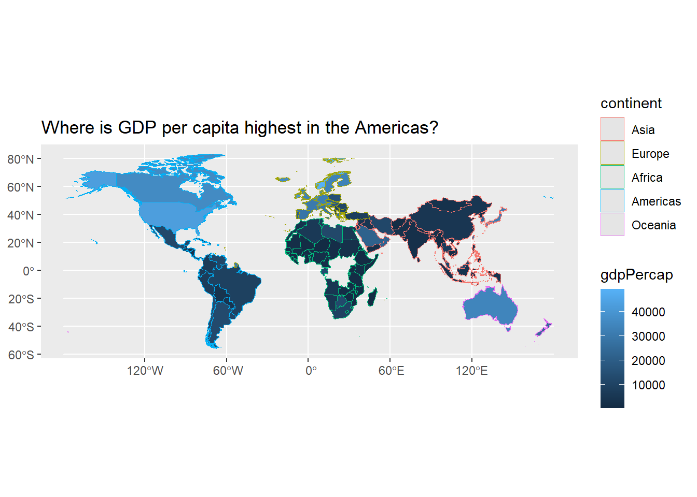

library(tidyverse)
library(mosaic)
library(skimr)
library(ggformula)
library(sf)
library(rnaturalearth)
library(ggspatial)
library(leaflet)
library(dplyr)
library(readr)
library(htmltools)
A <- read_csv("data/panel-A.csv")
B <- read_csv("data/panel-B.csv")
C <- read_csv("data/panel-C.csv")Group 2 — Risk factors
Studio wall
Spine
How do bodies carry risk, how do class and smoke talk, and where do children still die young?
Introduction — the tables we own
This folder is ours for the ten days. Three tables, three shapes.
- Panel A (
panel-A.csv) —cardioRiskFactors: BMI, lipids, blood pressure, uric acid.sexandsmokhave already been recoded from integers to factors. - Panel B (
panel-B.csv) — Scottish Health Survey 1998: sex, social class, smoking, diagnosed CVD.areais a code, not a map. - Panel C (
panel-C.csv) — SOWC child / infant / neonatal mortality by country. Join by country name.
If a brick needs a histogram, it lives in A. If it needs a mosaic, it lives in B.
Panel A — body / measure
bmi, choles, sys, dia, Uric are Quant. Do not average
smok.
1. See the table
# glimpse() / inspect() / skim()
dplyr::glimpse(A)Rows: 998
Columns: 14
$ age <dbl> 52, 54, 61, 51, 58, 62, 54, 52, 45, 55, 39, 57, 31, 50, 50, 4…
$ bmi <dbl> 36.9, 30.7, 32.2, 36.6, 31.4, 42.3, 26.7, 27.0, 34.0, 20.9, 2…
$ waisthip <dbl> 0.8000000, 0.8256881, 0.8653846, 0.9166667, 0.8269231, 0.9391…
$ smok <chr> "non_smoker", "non_smoker", "non_smoker", "non_smoker", "non_…
$ choles <dbl> 7.4, 7.9, 7.0, 5.7, 8.7, 8.1, 6.5, 7.7, 7.4, 6.7, 7.4, 5.5, 4…
$ trig <dbl> 3.44, 2.24, 1.75, 2.10, 2.26, 1.97, 2.64, 2.07, 2.63, 2.99, 3…
$ hdl <dbl> 1.25, 1.46, 1.28, 1.07, 0.80, 1.02, 1.66, 1.18, 0.84, 1.11, 1…
$ ldl <dbl> 4.59, 5.42, 4.92, 3.68, 6.87, 6.18, 3.64, 5.58, 5.36, 4.23, 4…
$ sys <dbl> 154, 135, 154, 180, 154, 116, 168, 156, 141, 156, 141, 135, 1…
$ dia <dbl> 89.0, 81.0, 93.0, 112.0, 104.0, 85.0, 105.0, 104.0, 77.0, 96.…
$ Uric <dbl> 437, 361, 268, 335, 549, 315, 903, 691, 304, 607, 366, 482, 2…
$ sex <chr> "female", "female", "female", "female", "female", "female", "…
$ alco <dbl> 0.00000, 0.00000, 0.00000, 0.00000, 0.00000, 0.00000, 208.285…
$ apoa <dbl> 1.47, 1.18, 1.32, 1.07, 1.14, 1.08, 1.41, 1.19, 0.85, 1.27, 1…Our Panel-A data has:
- 998 observations and 14 variables. One case = one person, measured once.
age: Quantitative, numericbmi: Quantitative, numericwaisthip: Quantitative, numericsmok: Qualitative, categorical. Encoded<chr>, to be mutatedcholes: Quantitative, numerictrig: Quantitative, numerichdl: Quantitative, numericldl: Quantitative, numericsys: Quantitative, numericdia: Quantitative, numericUric: Quantitative, numericsex: Qualitative, categorical. Encoded<chr>, to be mutatedalco: Quantitative, numericapoa: Quantitative, numeric
A |> slice(1)# A tibble: 1 × 14
age bmi waisthip smok choles trig hdl ldl sys dia Uric sex
<dbl> <dbl> <dbl> <chr> <dbl> <dbl> <dbl> <dbl> <dbl> <dbl> <dbl> <chr>
1 52 36.9 0.8 non_smo… 7.40 3.44 1.25 4.59 154 89 437 fema…
# ℹ 2 more variables: alco <dbl>, apoa <dbl>Row 1 is one person: a 52-year-old woman who doesn’t smoke or drink, with a BMI of 36.9 and blood pressure of 154/89.
# glimpse() / inspect() / skim()
skimr::skim(A)| Name | A |
| Number of rows | 998 |
| Number of columns | 14 |
| _______________________ | |
| Column type frequency: | |
| character | 2 |
| numeric | 12 |
| ________________________ | |
| Group variables | None |
Variable type: character
| skim_variable | n_missing | complete_rate | min | max | empty | n_unique | whitespace |
|---|---|---|---|---|---|---|---|
| smok | 0 | 1 | 6 | 10 | 0 | 2 | 0 |
| sex | 0 | 1 | 4 | 6 | 0 | 2 | 0 |
Variable type: numeric
| skim_variable | n_missing | complete_rate | mean | sd | p0 | p25 | p50 | p75 | p100 | hist |
|---|---|---|---|---|---|---|---|---|---|---|
| age | 0 | 1 | 44.57 | 11.47 | 25.00 | 35.00 | 45.00 | 54.00 | 64.00 | ▇▇▇▇▇ |
| bmi | 0 | 1 | 25.75 | 5.31 | 14.80 | 21.80 | 25.10 | 29.00 | 48.60 | ▃▇▃▁▁ |
| waisthip | 0 | 1 | 0.83 | 0.07 | 0.47 | 0.79 | 0.83 | 0.88 | 1.21 | ▁▂▇▂▁ |
| choles | 0 | 1 | 5.58 | 1.25 | 2.50 | 4.70 | 5.50 | 6.40 | 11.00 | ▂▇▆▁▁ |
| trig | 0 | 1 | 1.29 | 0.88 | 0.28 | 0.75 | 1.03 | 1.56 | 7.98 | ▇▂▁▁▁ |
| hdl | 0 | 1 | 1.54 | 0.45 | 0.48 | 1.22 | 1.48 | 1.81 | 3.79 | ▂▇▃▁▁ |
| ldl | 0 | 1 | 3.45 | 1.22 | 0.63 | 2.61 | 3.42 | 4.21 | 9.49 | ▃▇▃▁▁ |
| sys | 0 | 1 | 135.91 | 23.90 | 90.00 | 119.00 | 132.00 | 150.00 | 245.00 | ▅▇▃▁▁ |
| dia | 0 | 1 | 88.00 | 14.15 | 59.00 | 78.25 | 87.00 | 97.00 | 172.00 | ▆▇▂▁▁ |
| Uric | 0 | 1 | 330.10 | 139.33 | 99.00 | 239.25 | 298.00 | 388.00 | 1885.00 | ▇▁▁▁▁ |
| alco | 0 | 1 | 30.32 | 78.16 | 0.00 | 0.00 | 0.00 | 16.01 | 672.11 | ▇▁▁▁▁ |
| apoa | 0 | 1 | 1.25 | 0.26 | 0.63 | 1.08 | 1.22 | 1.40 | 2.24 | ▂▇▆▂▁ |
On the Qual variables, panel-A data has:
sexhas 2 levels: “female” (524) and “male” (474)smokhas 2 levels: “non_smoker” (775) and “smoker” (223)- The split inside
sexis very uneven: only 36 women smoke (vs 488 who don’t), while 187 men smoke (vs 287 who don’t)
mosaic::tally(~ sex, data = A)sex
female male
524 474 mosaic::tally(~ smok, data = A)smok
non_smoker smoker
775 223 mosaic::tally(smok ~ sex, data = A) # counts of smok inside each sex sex
smok female male
non_smoker 488 287
smoker 36 187On the Quant variables, panel-A data has:
age: mean 44.6, sd 11.5, median 45, min 25, max 64. Pretty flat, no skew.bmi: mean 25.8, sd 5.3, median 25.1, min 14.8, max 48.6. Skewed right.hdl: mean 1.54, sd 0.45, median 1.48. Slightly skewed right.ldl: mean 3.45, sd 1.22, median 3.42. Close to symmetric.sys: mean 135.9, sd 23.9, median 132, max 245. Skewed right.Uric,trig,alco: very skewed right with a long tail (Uricgoes up to 1885).alco: 721 of 998 people have 0, so most people don’t drink at all.
There is no missing data.
A_mod <- A |> mutate(sex = as.factor(sex), smok = as.factor(smok))
glimpse(A_mod)Rows: 998
Columns: 14
$ age <dbl> 52, 54, 61, 51, 58, 62, 54, 52, 45, 55, 39, 57, 31, 50, 50, 4…
$ bmi <dbl> 36.9, 30.7, 32.2, 36.6, 31.4, 42.3, 26.7, 27.0, 34.0, 20.9, 2…
$ waisthip <dbl> 0.8000000, 0.8256881, 0.8653846, 0.9166667, 0.8269231, 0.9391…
$ smok <fct> non_smoker, non_smoker, non_smoker, non_smoker, non_smoker, n…
$ choles <dbl> 7.4, 7.9, 7.0, 5.7, 8.7, 8.1, 6.5, 7.7, 7.4, 6.7, 7.4, 5.5, 4…
$ trig <dbl> 3.44, 2.24, 1.75, 2.10, 2.26, 1.97, 2.64, 2.07, 2.63, 2.99, 3…
$ hdl <dbl> 1.25, 1.46, 1.28, 1.07, 0.80, 1.02, 1.66, 1.18, 0.84, 1.11, 1…
$ ldl <dbl> 4.59, 5.42, 4.92, 3.68, 6.87, 6.18, 3.64, 5.58, 5.36, 4.23, 4…
$ sys <dbl> 154, 135, 154, 180, 154, 116, 168, 156, 141, 156, 141, 135, 1…
$ dia <dbl> 89.0, 81.0, 93.0, 112.0, 104.0, 85.0, 105.0, 104.0, 77.0, 96.…
$ Uric <dbl> 437, 361, 268, 335, 549, 315, 903, 691, 304, 607, 366, 482, 2…
$ sex <fct> female, female, female, female, female, female, male, male, f…
$ alco <dbl> 0.00000, 0.00000, 0.00000, 0.00000, 0.00000, 0.00000, 208.285…
$ apoa <dbl> 1.47, 1.18, 1.32, 1.07, 1.14, 1.08, 1.41, 1.19, 0.85, 1.27, 1…A few helper columns for later bricks. These are cut-offs we chose, not columns in the data: “high bp” is sys >= 140 or dia >= 90, “obese” is bmi >= 30, “drinker” is alco > 0.
A_flag <- A_mod |>
mutate(
high_bp = (sys >= 140 | dia >= 90),
obese = (bmi >= 30),
drinker = (alco > 0)
)
A_flag |> summarise(
pct_high_bp = mean(high_bp),
pct_obese = mean(obese),
n_nondrinkers = sum(!drinker)
)# A tibble: 1 × 3
pct_high_bp pct_obese n_nondrinkers
<dbl> <dbl> <int>
1 0.484 0.197 721Findings from this look:
- 524 women and 474 men; 775 non-smokers and 223 smokers (only 36 women smoke, compared to 187 men).
- Most people don’t drink: 721 of 998.
- 48% of people have high blood pressure.
- 20% of people are obese (
bmi >= 30).
2. Ask
Based on the spine, these are our questions:
Possibly can answer:
- Are women and men affected differently? Do they carry risk in different ways?
- Is
waisthipa better match for risk markers thanbmi? (Where you carry weight vs how much.) - Do smokers and non-smokers have different
hdlandldllevels, for men and for women? Is the pattern still there for non-drinkers? (Main Character Question)
Possibly cannot answer:
- How much smoking matters. (No dose or duration of smoking, just smoker / non-smoker.)
- Did any of these people get heart disease? (No outcome column, so we can’t tell whether a “high” value actually leads to heart disease.)
3. Choose a mark
- Bar chart for the Qual counts (
sex,smok), no histograms for these. - Histograms for single Quant variables (
age,bmi,sys,alco, …) - Scatter + straight-line smoother for Quant + Quant (
sys ~ age,sys ~ waisthip,sys ~ bmi,hdl ~ trig,hdl ~ alco), with a correlation number to back it up - Violins for Quant + Qual (2 levels): body measures by
sex, andhdl/ldlbysmok, split bysex - Density plot to see
hdlandldlside by side in one chart - Two-sample test for means beside the matching violin
4. Predict
- Question 1: Men will carry more weight around the middle (
waisthip), even if women have the higherbmi. - Question 2:
waisthipwill line up with blood pressure and uric acid more closely thanbmidoes. - Question 3 (Main Character): Smokers will have worse cholesterol: lower
hdland higherldlthan non-smokers.
5. Make
These are the charts we used to explore the data. They don’t show up in the render, but they helped us decide what to look at next.
## Qual counts
A_mod |> gf_bar(~ sex)
A_mod |> gf_bar(~ smok)
A_mod |> gf_bar(~ smok, fill = ~ sex)
## Quant shapes
A_mod |> gf_histogram(~ age)
A_mod |> gf_histogram(~ bmi)
A_mod |> gf_histogram(~ sys)
A_mod |> gf_histogram(~ Uric)
A_mod |> gf_histogram(~ alco)Question 1: do women and men carry risk differently?
A_mod |> gf_violin(bmi ~ sex, fill = ~ sex) |>
gf_labs(title = "Women have the higher BMI...", x = NULL)
A_mod |> gf_violin(waisthip ~ sex, fill = ~ sex) |>
gf_labs(title = "...but men carry more weight around the middle", x = NULL)
A_mod |> gf_violin(sys ~ sex, fill = ~ sex) |>
gf_labs(title = "Men have higher blood pressure", x = NULL, y = "Systolic BP (mmHg)")
A_mod |> gf_violin(Uric ~ sex, fill = ~ sex) |>
gf_labs(title = "Men have much higher uric acid", x = NULL, y = "Uric acid")
Prediction was right: women have higher bmi, men have higher waisthip, blood pressure and Uric.
Blood pressure rises with age:
A_mod |> gf_point(sys ~ age) |> gf_smooth(method = "lm") |>
gf_labs(title = "Blood pressure goes up with age", y = "Systolic BP (mmHg)")
Question 2: where you carry weight (waisthip) vs how much (bmi)
A_mod |> gf_point(sys ~ waisthip) |> gf_smooth(method = "lm")
A_mod |> gf_point(sys ~ bmi) |> gf_smooth(method = "lm")
A_mod |> gf_point(Uric ~ waisthip) |> gf_smooth(method = "lm")
A_mod |> gf_point(Uric ~ bmi) |> gf_smooth(method = "lm")
A_mod |> gf_point(trig ~ waisthip) |> gf_smooth(method = "lm")
A_mod |> gf_point(trig ~ bmi) |> gf_smooth(method = "lm")
# put numbers on it
cor(sys ~ waisthip, data = A_mod)[1] 0.3270939cor(sys ~ bmi, data = A_mod)[1] 0.2147511cor(Uric ~ waisthip, data = A_mod)[1] 0.4902608cor(Uric ~ bmi, data = A_mod)[1] 0.1108893cor(trig ~ waisthip, data = A_mod)[1] 0.3892571cor(trig ~ bmi, data = A_mod)[1] 0.2192494waisthip wins every time: sys 0.33 vs 0.21, Uric 0.49 vs 0.11, trig 0.39 vs 0.22.
More triglycerides, less HDL:
A_mod |> gf_point(hdl ~ trig) |> gf_smooth(method = "lm") |>
gf_labs(title = "More triglycerides, less good cholesterol")
Drinkers have higher uric acid:
A_flag |> gf_violin(Uric ~ drinker, fill = ~ drinker) |>
gf_labs(title = "Drinkers have higher uric acid", x = "Drinks alcohol?")
A_flag |> group_by(drinker) |> summarise(mean_Uric = mean(Uric), n = n())# A tibble: 2 × 3
drinker mean_Uric n
<lgl> <dbl> <int>
1 FALSE 298. 721
2 TRUE 414. 277Question 3 (Main Character): smokers and cholesterol, men and women separately
Human brick first: our own starting chart, before any AI.
# Our first attempt: HDL and LDL as two separate graphs
A_mod |> gf_histogram(~ hdl, fill = ~ smok, position = "dodge", bins = 25) |> gf_facet_wrap(~ factor(sex))
A_mod |> gf_histogram(~ ldl, fill = ~ smok, position = "dodge", bins = 25) |> gf_facet_wrap(~ factor(sex))Problem: two separate graphs, so it’s hard to compare HDL and LDL side by side.
# ## Prompt we actually used
# "how can I plot these 2 graphs together so I can analyse both hdl and ldl side by side"
# ai_draft
A_mod |>
pivot_longer(c(hdl, ldl), names_to = "cholesterol", values_to = "level") |>
gf_density(~ level, fill = ~ smok, alpha = 0.5) |>
gf_facet_grid(cholesterol ~ factor(sex))
# ours
# kept pivot_longer() + gf_facet_grid(), tried it as a histogram first,
# switched to density because the groups are really uneven (36 vs 488 women),
# added a title + captionA_mod |>
pivot_longer(c(hdl, ldl), names_to = "cholesterol", values_to = "level") |>
gf_density(~ level, fill = ~ smok, alpha = 0.5) |>
gf_facet_grid(cholesterol ~ sex) |>
gf_labs(
title = "Male smokers have more good cholesterol and less bad; women barely differ",
caption = "Panel A, cardioRiskFactors (n = 998). Only 36 women smoke.",
x = "Cholesterol (mmol/L)"
)
The same comparison as violins, with the group means:
A_mod |> gf_violin(hdl ~ smok, fill = ~ smok) |> gf_facet_grid(~ sex) |>
gf_labs(title = "Male smokers have higher good cholesterol (HDL)", x = NULL,
caption = "Only 36 women smoke, so the female smoker violin is thin on data.")
A_mod |> gf_violin(ldl ~ smok, fill = ~ smok) |> gf_facet_grid(~ sex) |>
gf_labs(title = "Male smokers have lower bad cholesterol (LDL)", x = NULL)
A_mod |> group_by(sex, smok) |>
summarise(n = n(), mean_hdl = mean(hdl), mean_ldl = mean(ldl), .groups = "drop")# A tibble: 4 × 5
sex smok n mean_hdl mean_ldl
<fct> <fct> <int> <dbl> <dbl>
1 female non_smoker 488 1.55 3.70
2 female smoker 36 1.51 3.46
3 male non_smoker 287 1.45 3.39
4 male smoker 187 1.68 2.89The male smokers stand out: higher hdl, lower ldl. That’s the opposite of what we predicted. What else is different about them? Check drinking:
A_flag |> filter(sex == "male", smok == "smoker") |>
summarise(pct_drinkers = mean(drinker)) # about 68%# A tibble: 1 × 1
pct_drinkers
<dbl>
1 0.679A_mod |> gf_point(hdl ~ alco) |> gf_smooth(method = "lm") |>
gf_labs(title = "Good cholesterol rises a little with alcohol")
hdl rises with alco. So is it the smoking, or the drinking riding along with it? Repeat the comparison for non-drinkers only:
A_nd <- A_flag |> filter(!drinker)
A_nd |> gf_violin(hdl ~ smok, fill = ~ smok) |> gf_facet_grid(~ sex) |>
gf_labs(title = "Non-drinkers only: male smokers still have higher HDL", x = NULL)
A_nd |> gf_violin(ldl ~ smok, fill = ~ smok) |> gf_facet_grid(~ sex) |>
gf_labs(title = "Non-drinkers only: male smokers still have lower LDL", x = NULL)
Stat test for means, beside the matching violin (men only, since the women smoker group is just 36 people):
A_men <- A_mod |> filter(sex == "male")
mosaic::t.test(hdl ~ smok, data = A_men)
Welch Two Sample t-test
data: hdl by smok
t = -4.9038, df = 342.58, p-value = 1.455e-06
alternative hypothesis: true difference in means between group non_smoker and group smoker is not equal to 0
95 percent confidence interval:
-0.3322454 -0.1420173
sample estimates:
mean in group non_smoker mean in group smoker
1.445436 1.682567 mosaic::t.test(ldl ~ smok, data = A_men)
Welch Two Sample t-test
data: ldl by smok
t = 4.5786, df = 389.59, p-value = 6.307e-06
alternative hypothesis: true difference in means between group non_smoker and group smoker is not equal to 0
95 percent confidence interval:
0.2882782 0.7221729
sample estimates:
mean in group non_smoker mean in group smoker
3.393728 2.888503 # and again with non-drinking men only
A_men_nd <- A_men |> filter(alco == 0)
mosaic::t.test(hdl ~ smok, data = A_men_nd)
Welch Two Sample t-test
data: hdl by smok
t = -3.4683, df = 87.494, p-value = 0.0008146
alternative hypothesis: true difference in means between group non_smoker and group smoker is not equal to 0
95 percent confidence interval:
-0.36792011 -0.09986561
sample estimates:
mean in group non_smoker mean in group smoker
1.370774 1.604667 mosaic::t.test(ldl ~ smok, data = A_men_nd)
Welch Two Sample t-test
data: ldl by smok
t = 3.0438, df = 100.42, p-value = 0.002982
alternative hypothesis: true difference in means between group non_smoker and group smoker is not equal to 0
95 percent confidence interval:
0.1827094 0.8666715
sample estimates:
mean in group non_smoker mean in group smoker
3.517857 2.993167 6. Say
- Prediction missed. Male smokers have higher
hdl(about 0.24 higher on average) and lowerldl(about 0.5 lower) than male non-smokers, both p-values far below 0.05. - The pattern is still there among men who don’t drink (
hdlabout 0.23 higher,ldlabout 0.5 lower), so drinking alone doesn’t explain it. Among women the gap is small, and only 36 women smoke. - Women carry risk differently from men: higher
bmiin women; higherwaisthip, blood pressure andUricin men. - Blood pressure rises with age, and
waisthiplines up with the risk markers (Uric,trig,sys) more closely thanbmidoes. - 48% of this group has high blood pressure, 20% is obese, and 721 of 998 don’t drink.
7. Limit
- We can’t say how much smoking matters: we only have smoker / non-smoker, no amount or duration.
- We can’t say whether anyone got heart disease. There’s no outcome column, so a “high” value can’t be turned into “more likely to get heart disease”.
- “High blood pressure”, “obese” and “drinker” are cut-offs we chose, not columns in the data.
- This is one sample of 998 people. Associations here are not causes: a smoker’s higher
hdlis not a reason to smoke. - Only 36 women smoke, too few to be sure about women.
- We don’t know who these people are, where they’re from, or how they were chosen.
ldlis calculated fromcholes,hdlandtrig, not measured on its own.- Some values are extreme (
diaup to 172,Uricup to 1885). - Kit table we refused to abuse:
smokandsexwere never averaged or put in a histogram.
A_mod |> gf_histogram(~ choles, fill = ~ sex)`stat_bin()` using `bins = 30`. Pick better value `binwidth`.
A_mod |> group_by(sex) |> summarize ( mean_choles = mean(choles, na.rm = T))# A tibble: 2 × 2
sex mean_choles
<fct> <dbl>
1 female 5.75
2 male 5.39A_mod |> group_by(smok) |> summarize ( mean_choles = mean(choles, na.rm = T))# A tibble: 2 × 2
smok mean_choles
<fct> <dbl>
1 non_smoker 5.68
2 smoker 5.25mosaic::t_test(choles ~ sex, data = A_mod)
Welch Two Sample t-test
data: choles by sex
t = 4.6478, df = 994.83, p-value = 3.806e-06
alternative hypothesis: true difference in means between group female and group male is not equal to 0
95 percent confidence interval:
0.2107243 0.5186891
sample estimates:
mean in group female mean in group male
5.754580 5.389873 Panel B — category / talk
smoke × sex, cvd × sc (social class).
areais forbidden as geography. Do not averagesc.
1. See the table
# glimpse() / inspect() / skim()
dplyr::glimpse(B)Rows: 8,804
Columns: 7
$ age <dbl> 50, 71, 55, 61, 32, 26, 68, 32, 20, 37, 47, 37, 70, 34, 49, 4…
$ sex <chr> "female", "female", "female", "female", "female", "female", "…
$ sc <dbl> 3, 45, 45, 3, 12, 3, 45, 12, 45, 12, 12, 45, 12, 3, 3, 12, 3,…
$ carstair <dbl> -2.45, -2.45, -2.45, -2.45, -2.45, -2.45, -2.45, -2.45, -2.45…
$ smoke <chr> "nevr", "nevr", "mod", "ex", "ex", "mod", "hvy", "nevr", "ex"…
$ area <dbl> 1, 1, 1, 1, 1, 1, 1, 1, 1, 1, 1, 1, 1, 1, 1, 1, 1, 1, 1, 1, 1…
$ cvd <chr> "no", "no", "no", "yes", "no", "no", "yes", "yes", "no", "no"…Our Panel-B data has:
- 8804 observations and 7 variables. One case = one person in the Scottish Health Survey, 1998.
age: Quantitative, numericsex: Qualitative, categorical. Encoded<chr>, to be mutatedsc: Qualitative, categorical (social class, based on job). Encoded as numbers12,3,45, but these are labels, not amounts. To be mutatedcarstair: Quantitative, numeric (Carstairs deprivation score of the person’s area; higher = more deprived)smoke: Qualitative, categorical. Encoded<chr>, to be mutatedarea: Qualitative, a code for where people live. Not a map, not a numbercvd: Qualitative, categorical (cardiovascular disease, yes / no). Encoded<chr>, to be mutated
B |> slice(1)# A tibble: 1 × 7
age sex sc carstair smoke area cvd
<dbl> <chr> <dbl> <dbl> <chr> <dbl> <chr>
1 50 female 3 -2.45 nevr 1 no Row 1 is one person: a 50-year-old woman in social class III, who has never smoked, lives in a less deprived area (carstair -2.45) and doesn’t have CVD.
skimr::skim(B)| Name | B |
| Number of rows | 8804 |
| Number of columns | 7 |
| _______________________ | |
| Column type frequency: | |
| character | 3 |
| numeric | 4 |
| ________________________ | |
| Group variables | None |
Variable type: character
| skim_variable | n_missing | complete_rate | min | max | empty | n_unique | whitespace |
|---|---|---|---|---|---|---|---|
| sex | 0 | 1 | 4 | 6 | 0 | 2 | 0 |
| smoke | 0 | 1 | 2 | 4 | 0 | 5 | 0 |
| cvd | 0 | 1 | 2 | 3 | 0 | 2 | 0 |
Variable type: numeric
| skim_variable | n_missing | complete_rate | mean | sd | p0 | p25 | p50 | p75 | p100 | hist |
|---|---|---|---|---|---|---|---|---|---|---|
| age | 0 | 1 | 46.21 | 15.52 | 18.00 | 33.00 | 45.00 | 60.00 | 74.00 | ▆▇▆▆▆ |
| sc | 0 | 1 | 18.34 | 18.09 | 3.00 | 3.00 | 12.00 | 45.00 | 45.00 | ▇▅▁▁▆ |
| carstair | 0 | 1 | -0.20 | 3.27 | -6.23 | -2.46 | -0.68 | 1.48 | 12.53 | ▅▇▃▁▁ |
| area | 0 | 1 | 162.75 | 91.19 | 1.00 | 84.00 | 165.00 | 244.25 | 312.00 | ▆▆▇▇▇ |
On the Qual variables, panel-B data has:
sexhas 2 levels: “female” (4987) and “male” (3817)schas 3 levels:12= classes I–II, the highest (2421),3= class III (3686),45= classes IV–V, the lowest (2697)smokehas 5 levels: “nevr” (3573), “ex” (2151), “lite” (577), “mod” (1270), “hvy” (1233)cvdhas 2 levels: “no” (6389) and “yes” (2415), so about 27% have CVDareahas 312 different codes
mosaic::tally(~ sex, data = B)sex
female male
4987 3817 mosaic::tally(~ sc, data = B)sc
3 12 45
3686 2421 2697 mosaic::tally(~ smoke, data = B)smoke
ex hvy lite mod nevr
2151 1233 577 1270 3573 mosaic::tally(~ cvd, data = B)cvd
no yes
6389 2415 On the Quant variables, panel-B data has:
age: mean 46.2, sd 15.5, median 45, min 18, max 74carstair: mean -0.20, sd 3.27, median -0.68, min -6.23, max 12.53. Skewed right.- Everyone in the same
areahas the samecarstair, so it describes the neighbourhood, not the person.
There is no missing data.
B_mod <- B |>
mutate(across(where(is.character), as.factor)) |>
mutate(
sc = fct_recode(as.factor(sc),
"I-II (high)" = "12",
"III (middle)" = "3",
"IV-V (low)" = "45"),
sc = fct_relevel(sc, "I-II (high)", "III (middle)", "IV-V (low)"),
smoke = fct_relevel(smoke, "nevr", "ex", "lite", "mod", "hvy"),
area = as.factor(area)
)
glimpse(B_mod)Rows: 8,804
Columns: 7
$ age <dbl> 50, 71, 55, 61, 32, 26, 68, 32, 20, 37, 47, 37, 70, 34, 49, 4…
$ sex <fct> female, female, female, female, female, female, female, male,…
$ sc <fct> III (middle), IV-V (low), IV-V (low), III (middle), I-II (hig…
$ carstair <dbl> -2.45, -2.45, -2.45, -2.45, -2.45, -2.45, -2.45, -2.45, -2.45…
$ smoke <fct> nevr, nevr, mod, ex, ex, mod, hvy, nevr, ex, ex, nevr, ex, ne…
$ area <fct> 1, 1, 1, 1, 1, 1, 1, 1, 1, 1, 1, 1, 1, 1, 1, 1, 1, 1, 1, 1, 1…
$ cvd <fct> no, no, no, yes, no, no, yes, yes, no, no, no, no, no, no, no…sc gets readable names, and smoke goes in order from never to heavy instead of alphabetical. age and carstair stay as numbers.
One helper column: carstair cut into three equal groups. These are cut-offs we chose (equal thirds), not groups in the data.
B_mod <- B_mod |>
mutate(deprivation = cut_number(carstair, n = 3,
labels = c("less deprived", "middle", "more deprived")))All ready now.
2. Ask
Based on the spine (how do class and smoke talk), these are our questions:
Possibly can answer:
- Does higher social class (
sc) go with lower deprivation (carstair)? - Is deprivation related to CVD?
- Does social class affect CVD?
- Does smoking lower your risk of CVD? (Main Character Question)
Possibly cannot answer:
- Why do ex-smokers have the highest rate of CVD? Did they quit because they got ill? (No dates for quitting or diagnosis.)
3. Choose a mark
- Bar chart for the Qual counts (
sex,sc,smoke,cvd) - Boxplot for Quant + Qual (
carstairbysc,carstairbycvd,agebysmoke) - Mosaic plot for Qual + Qual (
deprivation × sc,cvd × sc,smoke × cvd), shaded to show surprises - Chi-square test beside each mosaic: are two categories linked, or is it chance?
- t-test (2 groups)
4. Predict
- Question 1: Higher social classes will live in less deprived areas.
- Question 2: Deprivation and CVD will be inversely related.
- Question 3: Lower social classes will have more CVD.
- Question 4 (Main): Smokers will have more CVD than people who never smoked.
5. Make
These are the charts we used to explore the data. They don’t show up in the render, but they helped us decide what to look at next.
## Qual counts
B_mod |> gf_bar(~ sex)
B_mod |> gf_bar(~ sc)
B_mod |> gf_bar(~ smoke)
B_mod |> gf_bar(~ cvd)
## Quant shapes
B_mod |> gf_density(~ age)
B_mod |> gf_density(~ carstair)Question 1: does higher social class go with lower deprivation?
B_mod |> gf_boxplot(carstair ~ sc, fill = ~ sc) |>
gf_labs(title = "Lower social class, more deprived neighbourhood",
x = "Social class", y = "Carstairs score (higher = more deprived)")
vcd::structable(deprivation ~ sc, data = B_mod) |>
vcd::mosaic(shade = TRUE, main = "Higher classes live in less deprived areas")
B_mod |> group_by(sc) |> summarise(mean_carstair = mean(carstair), n = n())# A tibble: 3 × 3
sc mean_carstair n
<fct> <dbl> <int>
1 I-II (high) -1.24 2421
2 III (middle) -0.145 3686
3 IV-V (low) 0.648 2697aov(carstair ~ sc, data = B_mod) |> summary() Df Sum Sq Mean Sq F value Pr(>F)
sc 2 4561 2280.3 224.2 <2e-16 ***
Residuals 8801 89517 10.2
---
Signif. codes: 0 '***' 0.001 '**' 0.01 '*' 0.05 '.' 0.1 ' ' 1Prediction was right. Class I–II averages -1.24 on carstair, class IV–V averages +0.65. 47% of class I–II live in the least deprived third of areas, compared to 23% of class IV–V.
Question 2: is deprivation related to CVD?
Our first look:
B_mod |>
gf_histogram(~ carstair, fill = ~ cvd) |>
gf_facet_wrap(~ smoke)`stat_bin()` using `bins = 30`. Pick better value `binwidth`.
Hard to compare, because the cvd groups and smoking groups are such different sizes. So, a boxplot and a mosaic:
B_mod |> gf_boxplot(carstair ~ cvd, fill = ~ cvd) |>
gf_labs(title = "People with CVD live in slightly more deprived areas",
x = "CVD", y = "Carstairs score (higher = more deprived)")
vcd::structable(cvd ~ deprivation, data = B_mod) |>
vcd::mosaic(shade = TRUE, main = "A little more CVD in more deprived areas")
mosaic::t_test(carstair ~ cvd, data = B_mod)
Welch Two Sample t-test
data: carstair by cvd
t = -4.9615, df = 4247.5, p-value = 7.269e-07
alternative hypothesis: true difference in means between group no and group yes is not equal to 0
95 percent confidence interval:
-0.5463623 -0.2368695
sample estimates:
mean in group no mean in group yes
-0.31012521 0.08149068 Prediction missed, in direction. It’s not inverse: more deprivation goes with a bit more CVD. 25% of people in the least deprived third have CVD, compared to 29% in the most deprived third. The gap is small, but the t-test says it’s real (p far below 0.05).
Question 3: does social class affect CVD?
vcd::structable(cvd ~ sc, data = B_mod) |>
vcd::mosaic(shade = TRUE, main = "CVD barely changes across social class")
B_mod |> group_by(sc) |> summarise(pct_cvd = mean(cvd == "yes"), n = n())# A tibble: 3 × 3
sc pct_cvd n
<fct> <dbl> <int>
1 I-II (high) 0.257 2421
2 III (middle) 0.278 3686
3 IV-V (low) 0.285 2697mosaic::xchisq.test(mosaic::tally(cvd ~ sc, data = B_mod))
Pearson's Chi-squared test
data: x
X-squared = 5.705, df = 2, p-value = 0.0577
1800 2661 1928
(1756.90) (2674.90) (1957.19)
[1.057] [0.072] [0.435]
< 1.03> <-0.27> <-0.66>
621 1025 769
( 664.10) (1011.10) ( 739.81)
[2.797] [0.191] [1.152]
<-1.67> < 0.44> < 1.07>
key:
observed
(expected)
[contribution to X-squared]
<Pearson residual>Only a small difference: 25.7% (I–II), 27.8% (III), 28.5% (IV–V). The chi-square p-value is about 0.06, just above 0.05, so we can’t say class and CVD are linked here.
Class does talk to smoking, though:
vcd::structable(smoke ~ sc, data = B_mod) |>
vcd::mosaic(shade = TRUE, main = "Lower classes smoke more heavily")
48% of class I–II have never smoked, compared to 35% of class IV–V. Heavy smokers: 9% vs 19%.
Question 4 (Main): does smoking lower your risk of CVD?
Our mosaics and test:
vcd::structable(smoke ~ cvd, data = B_mod) |> vcd::mosaic()
vcd::structable(smoke ~ cvd, data = B_mod) |> vcd::mosaic(type = "expected")
vcd::structable(smoke ~ cvd, data = B_mod) |>
vcd::mosaic(shade = TRUE, main = "Ex-smokers stand out with the most CVD")
B_mod |> group_by(smoke) |> summarise(pct_cvd = mean(cvd == "yes"), n = n())# A tibble: 5 × 3
smoke pct_cvd n
<fct> <dbl> <int>
1 nevr 0.244 3573
2 ex 0.360 2151
3 lite 0.248 577
4 mod 0.238 1270
5 hvy 0.262 1233mosaic::xchisq.test(mosaic::tally(smoke ~ cvd, data = B_mod))
Pearson's Chi-squared test
data: x
X-squared = 107.81, df = 4, p-value < 2.2e-16
2701 872
(2592.90) ( 980.10)
[ 4.51] [11.92]
< 2.12> <-3.45>
1376 775
(1560.97) ( 590.03)
[21.92] [57.98]
<-4.68> < 7.61>
434 143
( 418.72) ( 158.28)
[ 0.56] [ 1.47]
< 0.75> <-1.21>
968 302
( 921.63) ( 348.37)
[ 2.33] [ 6.17]
< 1.53> <-2.48>
910 323
( 894.78) ( 338.22)
[ 0.26] [ 0.68]
< 0.51> <-0.83>
key:
observed
(expected)
[contribution to X-squared]
<Pearson residual>Prediction missed. Current smokers (lite, mod, hvy: 24–26%) have about the same CVD rate as people who never smoked (24%). The group that stands out is ex-smokers, at 36%. Why?
B_mod |> gf_boxplot(age ~ smoke, fill = ~ smoke) |>
gf_labs(title = "Ex-smokers are older than everyone else", x = NULL, y = "Age")
B_mod |> group_by(smoke) |> summarise(mean_age = mean(age))# A tibble: 5 × 2
smoke mean_age
<fct> <dbl>
1 nevr 44.6
2 ex 52.3
3 lite 41.9
4 mod 43.4
5 hvy 45.2Ex-smokers are older (average 52, compared to 42–45 for the other groups), and CVD goes up a lot with age. So age is probably doing a lot of the work here.
6. Say
- Class and place talk: higher social classes live in less deprived areas (class I–II average
carstair-1.24 vs +0.65 for class IV–V, p far below 0.05). - More deprived areas have slightly more CVD (25% vs 29%), the opposite direction from our prediction. Small, but real.
- Social class on its own barely changes CVD (p ≈ 0.06). Class shows up in where people live and how much they smoke more than in CVD directly.
- Smoking does not lower your risk. Current smokers have about the same CVD rate as never-smokers, and ex-smokers have the most (36%), but they’re also the oldest group.
7. Limit
- One snapshot from 1998. Links, not causes.
- We don’t know when people quit smoking or when CVD was diagnosed, so some ex-smokers may have quit because they got ill.
smokeis in groups, and we don’t know what “lite” or “hvy” actually means in cigarettes.carstairdescribes the area, not the person: a well-off person in a deprived area gets the area’s score.scis based on job type, which leaves out people without a job and says nothing about income.cvdis just yes / no, with no type or severity.- Age affects almost everything here, and we haven’t fully separated it out.
- The deprivation groups are cut-offs we chose (equal thirds).
- Kit table we refused to abuse:
scandareawere never averaged or treated as numbers, andareawas never used as a map.
Panel C — place
lifeExp / gdpPercap / pop by country and continent. Same join brick as other map panels.
1. See the table
What is a case? Which columns are Quant / Qual? What is missing?
dplyr::glimpse(C)Rows: 141
Columns: 6
$ country <chr> "Afghanistan", "Albania", "Algeria", "Angola", "Argentina", …
$ continent <chr> "Asia", "Europe", "Africa", "Africa", "Americas", "Oceania",…
$ year <dbl> 2007, 2007, 2007, 2007, 2007, 2007, 2007, 2007, 2007, 2007, …
$ lifeExp <dbl> 43.828, 76.423, 72.301, 42.731, 75.320, 81.235, 79.829, 75.6…
$ pop <dbl> 31889923, 3600523, 33333216, 12420476, 40301927, 20434176, 8…
$ gdpPercap <dbl> 974.5803, 5937.0295, 6223.3675, 4797.2313, 12779.3796, 34435…My Panel-C data has:
- 25 rows and 6 columns. Each row (case) is one country in 2007.
country: Qualitative, categorical. Encoded, to be mutated continent: Qualitative, categorical. Encoded, to be mutated year: Quantitative, numeric. It is 2007 all the way down, so the data is for one year only.lifeExp: Quantitative, numericpop: Quantitative, numericgdpPercap: Quantitative, numeric
Let us join this data with map geometries from rnaturalearth, so that we can make maps of the quant variables.
world <- rnaturalearth::ne_countries(scale = "medium", returnclass = "sf")
#glimpse(world)world is an sf data frame, with a MULTIPOLYGON geometry column, which we need. The name column has the name of the country, which is what we will use to join with our Panel-C data.
Let us select just the name and geometry columns first, and then join with Panel-C data. In passing, we will also mutate country and continent into factors.
NOTE: the join fails for the USA, since Panel-C calls it “United States” and world calls it “United States of America”. We fix the name in Panel-C before joining.
world_selected <- world |> dplyr::select(name, geometry)
C_mod <- C |>
###
mutate(country = if_else(country == "United States",
"United States of America",
country)) |>
###
left_join(world_selected, by = c("country" = "name")) |>
###
mutate(
country = as_factor(country),
continent = as_factor(continent)
) |>
###
st_as_sf() # left_join() on a tibble drops the sf class, so put it back
glimpse(C_mod)Rows: 141
Columns: 7
$ country <fct> Afghanistan, Albania, Algeria, Angola, Argentina, Australia,…
$ continent <fct> Asia, Europe, Africa, Africa, Americas, Oceania, Europe, Asi…
$ year <dbl> 2007, 2007, 2007, 2007, 2007, 2007, 2007, 2007, 2007, 2007, …
$ lifeExp <dbl> 43.828, 76.423, 72.301, 42.731, 75.320, 81.235, 79.829, 75.6…
$ pop <dbl> 31889923, 3600523, 33333216, 12420476, 40301927, 20434176, 8…
$ gdpPercap <dbl> 974.5803, 5937.0295, 6223.3675, 4797.2313, 12779.3796, 34435…
$ geometry <MULTIPOLYGON [°]> MULTIPOLYGON (((66.52227 37..., MULTIPOLYGON ((…skimr::skim(C_mod)Warning: Couldn't find skimmers for class: sfc_MULTIPOLYGON, sfc; No
user-defined `sfl` provided. Falling back to `character`.| Name | C_mod |
| Number of rows | 141 |
| Number of columns | 7 |
| _______________________ | |
| Column type frequency: | |
| character | 1 |
| factor | 2 |
| numeric | 4 |
| ________________________ | |
| Group variables | None |
Variable type: character
| skim_variable | n_missing | complete_rate | min | max | empty | n_unique | whitespace |
|---|---|---|---|---|---|---|---|
| geometry | 0 | 1 | 6 | 390722 | 0 | 132 | 0 |
Variable type: factor
| skim_variable | n_missing | complete_rate | ordered | n_unique | top_counts |
|---|---|---|---|---|---|
| country | 0 | 1 | FALSE | 141 | Afg: 1, Alb: 1, Alg: 1, Ang: 1 |
| continent | 0 | 1 | FALSE | 5 | Afr: 52, Asi: 33, Eur: 30, Ame: 24 |
Variable type: numeric
| skim_variable | n_missing | complete_rate | mean | sd | p0 | p25 | p50 | p75 | p100 | hist |
|---|---|---|---|---|---|---|---|---|---|---|
| year | 0 | 1 | 2007.00 | 0.00 | 2007.00 | 2007.00 | 2007.00 | 2007.00 | 2.007000e+03 | ▁▁▇▁▁ |
| lifeExp | 0 | 1 | 66.99 | 12.11 | 39.61 | 56.87 | 71.99 | 76.42 | 8.260000e+01 | ▂▃▃▆▇ |
| pop | 0 | 1 | 44325933.13 | 148102855.77 | 199579.00 | 4552198.00 | 10642836.00 | 31889923.00 | 1.318683e+09 | ▇▁▁▁▁ |
| gdpPercap | 0 | 1 | 11635.19 | 12894.62 | 277.55 | 1598.44 | 6025.37 | 18008.94 | 4.935719e+04 | ▇▂▁▂▁ |
Finally, after joining, on the Qual variables Panel-C data has:
country: Qualitative, categorical. Encodedwith 25 levels, one per country, from “Argentina” to “United States”. continent: Qualitative, categorical. Encodedwith 1 level: “Americas”
And the Quant variables are:
year: Quantitative, numeric. One value only: 2007lifeExp: Quantitative, numeric. Mean: 73.6, sd: 4.44, min: 60.9, median: 72.9, max: 80.7pop: Quantitative, numeric. Mean: 3.60e+07, sd: 6.88e+07, min: 1.06e+06, median: 9.32e+06, max: 3.01e+08gdpPercap: Quantitative, numeric. Mean: 11003, sd: 9713, min: 1202, median: 8948, max: 42952
There is no missing data. pop and gdpPercap are extremely right-skewed, which is why we use log scales below.
2. Ask
One question this table can answer. One it cannot. Write both.
Possibly can answer:
- How is
popspread across the countries of the Americas? - How does
gdpPercapvary per country across the Americas? (Main Character Question) - Are
gdpPercapandlifeExprelated? - Where on the map are the high
pop,lifeExpandgdpPercapcountries?
Possibly cannot answer:
- Why are some countries richer than others? (No data on causes)
- Do the quant variables change over time? (Only one
year)
3. Choose a mark
- Bar chart (
gf_col) forpopper country - Violin + jitter, and Box + jitter, for
gdpPercap - Scatter plot for
lifeExpvsgdpPercap - Maps (
gf_sf)
4. Predict
- I think more populous countries have higher gdp per capita.
- I think a few rich countries (USA, Canada) will sit far above the rest on
gdpPercap. - I think richer countries will have higher
lifeExp. - I think the maps will show North America high on
gdpPercapandlifeExp, and Latin America lower.
5. Make
#QUESTION 2:
C_mod |> gf_bar(continent ~ pop, fill = ~ continent)Warning: Ignoring unknown aesthetics: .Warning: The following aesthetics were dropped during statistical transformation: ..
ℹ This can happen when ggplot fails to infer the correct grouping structure in
the data.
ℹ Did you forget to specify a `group` aesthetic or to convert a numerical
variable into a factor?
##C_mod |> gf_bar(country ~ pop, fill = ~ continent, bins = 100)# Question 2
ggplot(C_mod, aes(continent, gdpPercap, colour = continent)) +
geom_violin() +
geom_jitter(width = 0.15) +
scale_y_log10() +
theme(legend.position = "none") +
labs(title = "How does GDP per capita vary per country across the continents?")
# Question 2
ggplot(C_mod, aes(continent, gdpPercap, colour = continent)) +
geom_boxplot() +
geom_jitter(width = 0.15) +
scale_y_log10() +
theme(legend.position = "none") +
labs(title = "How does GDP per capita vary per country across the Continents?")
# Question 3
ggplot(C_mod, aes(gdpPercap, lifeExp, colour = continent)) +
geom_point() +
scale_x_log10() +
labs(title = "Are GDP per capita and life expectancy related?")
# scale_x_log10() = decompress compressed points in graph
mosaic::cor.test(lifeExp ~ gdpPercap, data = C_mod)
Pearson's product-moment correlation
data: lifeExp and gdpPercap
t = 10.891, df = 139, p-value < 2.2e-16
alternative hypothesis: true correlation is not equal to 0
95 percent confidence interval:
0.5780980 0.7587608
sample estimates:
cor
0.6785623 # Question 4
C_mod |> gf_sf(geometry = ~ geometry, fill = ~ pop, color = ~ continent,
title = "Where do the most people live in the Americas?")
C_mod |> gf_sf(geometry = ~ geometry, fill = ~ lifeExp, color = ~ continent,
title = "Where is life expectancy highest in the Americas?")
C_mod |> gf_sf(geometry = ~ geometry, fill = ~ gdpPercap, color = ~ continent,
title = "Where is GDP per capita highest in the Americas?")
some missing countires on the map are because those are not in the dataset.
6. Say
Across the Americas in 2007, gdpPercap is very unequal: most countries are below about 13,000 (median 8,948), while the USA (about 43,000) and Canada (about 36,000) are far above the rest.
Richer countries live longer: lifeExp and gdpPercap are positively correlated (r = 0.59, p < 0.05). Haiti has the lowest of both, and Canada has the highest lifeExp.
My prediction 1 was only partly right. The USA is both the most populous and the richest, but Brazil and Mexico are populous with middle gdpPercap, and Canada has a small population but high gdpPercap.
The maps show North America high on gdpPercap and lifeExp, and the USA, Brazil and Mexico high on pop.
7. Limit
- Say why countries differ (no causes in the data, such as trade or aid)
- Show change over TIME (one
yearonly) - Compare with other continents (Americas only)
- Prove that money causes long life (correlation is not causation)
Panel D — Mapping Erin Brockovich’s investigation
I wanted to use maps to understand the places and people connected to Erin Brockovich’s investigation. Instead of looking at the household information only as a table, I mapped the locations to compare water samples, health reports and relocation. I also made a regional map to show her journey between Hinkley and the Los Angeles area.
households <- read_csv(
"data/households_simulated.csv",
show_col_types = FALSE
)
water <- read_csv(
"data/water_samples_simulated.csv",
show_col_types = FALSE
)
impacts <- read_csv(
"data/household_impacts_simulated.csv",
show_col_types = FALSE
)
families <- households |>
left_join(
water |>
select(
household_id,
chromium_vi_ug_l_simulated,
simulated_concentration_category,
water_sampled_simulated
),
by = "household_id"
) |>
left_join(
impacts |>
select(
household_id,
reported_symptoms_simulated,
reported_cancer_history_simulated,
property_sold_or_left_simulated,
water_concern_level_simulated
),
by = "household_id"
) |>
mutate(
water_category = coalesce(
as.character(simulated_concentration_category),
"No household well sample"
),
health_report = case_when(
reported_cancer_history_simulated == "Yes" ~
"Cancer history reported",
reported_symptoms_simulated == "Yes" ~
"Symptoms reported",
TRUE ~ "No report in this record"
),
movement = case_when(
property_sold_or_left_simulated == "Yes" ~
"Moved / left property",
property_sold_or_left_simulated == "No" ~
"Not marked as moved",
TRUE ~ "Status unavailable"
)
) |>
filter(
!is.na(longitude_simulated),
!is.na(latitude_simulated)
)
# Approximate location of PG&E Hinkley Compressor Station
plant_lng <- -117.1645
plant_lat <- 34.9327
# Plume starts at the plant and extends south
plume_lng <- c(
-117.1680, -117.1610, -117.1575, -117.1560,
-117.1590, -117.1655, -117.1700, -117.1690,
-117.1680
)
plume_lat <- c(
34.9340, 34.9340, 34.9200, 34.9060,
34.8930, 34.8900, 34.9070, 34.9230,
34.9340
)
osm_url <- "https://{s}.tile.openstreetmap.org/{z}/{x}/{y}.png"
osm_credit <- paste0(
'© <a href="https://www.openstreetmap.org/copyright">',
'OpenStreetMap</a> contributors'
)
make_local_map <- function() {
leaflet() |>
addTiles(
urlTemplate = osm_url,
attribution = osm_credit
) |>
addPolygons(
lng = plume_lng,
lat = plume_lat,
color = "#B2182B",
weight = 2,
fillColor = "#EF8A62",
fillOpacity = 0.35,
group = "Illustrative plume",
label = "Illustrative chromium plume"
) |>
addCircleMarkers(
lng = plant_lng,
lat = plant_lat,
radius = 8,
color = "white",
weight = 2,
fillColor = "#252525",
fillOpacity = 1,
label = "PG&E Hinkley Compressor Station",
popup = paste0(
"<b>PG&E Hinkley Compressor Station</b>",
"<br>35863 Fairview Road, Hinkley, CA",
"<br>Source area for the chromium contamination"
)
) |>
addLayersControl(
overlayGroups = "Illustrative plume",
options = layersControlOptions(collapsed = FALSE)
) |>
addMarkers(
lng = -117.164512,
lat = 34.932745,
popup = "PG&E Hinkley Compressor Station",
label = "PG&E Plant",
group = "Plant"
) |>
fitBounds(
lng1 = -117.195,
lat1 = 34.875,
lng2 = -117.135,
lat2 = 34.950
)
}Map 1 — Households and water samples
The first map shows where the households are located and colours them according to their recorded water-sample category. The shaded polygon gives a visual reference area for comparing the household locations.
Map 2 — Household health reports
For the second map, I used the health-report categories stored in the household impacts dataset. The same household coordinates are used, but the colours now represent the recorded health categories.
Map 3 — Families who moved or stayed
The third map compares households marked as having left their property with those not marked as having moved. This connects the geographical information to the effect the investigation had on families and their homes.
Map 4 — Erin’s journey
I also wanted to show the wider geographical context of the investigation. This map connects Hinkley with an assumed home and law-firm locations in the Los Angeles area.
What I noticed
Making these maps helped me see how location adds another layer to the story. The household maps show how the same locations can be understood through different lenses. The regional map connects Hinkley to the Los Angeles area and gives a sense of the distances involved in Erin’s investigation.
Conclusion
- The spine so far: Bodies carry risk differently by sex (A), class talks to where people live and how much they smoke more than to heart disease directly (B), and smoking keeps refusing to behave the way we predicted in both panels.
- The questions we will defend in ninety seconds:
- Panel A: Do smokers and non-smokers carry cholesterol differently, and why do male smokers look healthier?
- Panel B: Does smoking lower your risk of CVD? (No: ex-smokers have the most CVD, and they’re also the oldest.)
- What we will not claim: that smoking is good for cholesterol or the heart, that social class causes CVD, or that anything here causes heart disease.
- Which lines were human, which were machine:
- Human: the questions in both panels, the predictions, the first HDL/LDL histograms, the sys/dia scatter, using
facet_wrap()by sex, spotting the “how many cigarettes” limit, the helper columns and cut-offs, the violins andtally()counts, the cholesterol-by-sex histogram and t-test from class, thecarstairhistogram faceted bysmoke, and thesmoke × cvdmosaics and chi-square test. - Machine (AI-assisted): the
pivot_longer()combined chart,, formattingindex.qmdinto the template layout, merging drafts into one file, formatting Panel B, the deprivation groups (cut_number()), the age check for ex-smokers, and checking the numbers in both panels.
- Human: the questions in both panels, the predictions, the first HDL/LDL histograms, the sys/dia scatter, using
- Limits: one snapshot each, smoking is yes / no only in A and in loose groups in B, only 36 female smokers in A, age tangled up with smoking in B,
carstairdescribes the area not the person, unknown sampling. - Gift for the steal-this strip:
pivot_longer()to put two measures side by side in one faceted chart, helper columns with cut-offs stated out loud, andfct_relevel()/fct_recode()to put categories in a sensible order with readable names.